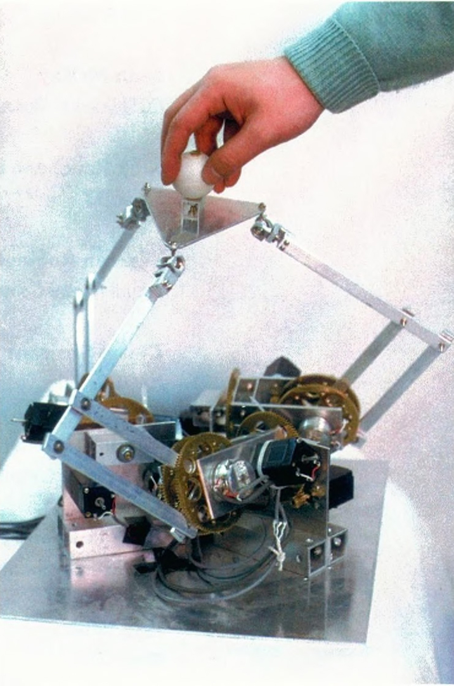

Iwata Desktop Force Display
A compact desktop haptic device that let you grope blind through invisible virtual space — feeling hard walls, squishy surfaces, and swirling fluid vortices with your bare hand.

Overview
The Desktop Force Display, developed by Hiroo Iwata and Hiroaki Yano at the University of Tsukuba and first presented at SIGGRAPH 1990, was the first compact, desktop-scale 6-degree-of-freedom force-feedback device built explicitly for human-computer interaction rather than telerobotics. It used a novel parallel mechanism: three sets of pantograph linkages (parallelogram linkages), each driven by two DC motors, supporting a small triangular platform with a handle. Unlike serial-link force displays that were large, heavy, and friction-ridden, the pantograph-parallel design was inherently back-drivable with exceptionally low inertia. Users felt almost no mechanical resistance when moving through empty virtual space, but crisp, immediate forces upon contacting virtual objects.
The working volume was a sphere approximately 40 centimeters in diameter with a maximum continuous force of about 2.5 kilograms. At SIGGRAPH 1990, Iwata demonstrated three canonical haptic interactions without any accompanying visual display: hard surfaces (impenetrable walls users could trace by feel), elastic surfaces (deformable with proportional resistance), and flow fields (force proportional to fluid velocity, torque proportional to vorticity — users felt currents and whirlpools). This 'blind exploration' paradigm was deliberate, designed to prove that force feedback alone could convey spatial layout, object identity, and material properties. The system processed 20–30 users per hour in 2–3 minute sessions with no calibration or instruction required.
Deep dive
Hiroo Iwata was a researcher at the University of Tsukuba working at the intersection of virtual reality, haptics, and HCI. In the late 1980s, force-feedback devices were almost exclusively large robotic arms for telerobotics (such as the JPL Force-Reflecting Hand Controller). These systems were expensive, room-filling, and suffered from high friction that made free-space movement feel sluggish. Iwata's key insight was to abandon the serial-link robot arm architecture and instead use a parallel pantograph mechanism — a design borrowed from drafting tools and mechanical linkages rather than industrial robotics.
The user grasped the handle with one hand and explored a purely virtual, invisible space. No visual display was provided. Three modes were demonstrated: (1) Hard surfaces — stiff position-dependent forces prevented penetration; users could trace surface contours and edges by feel. (2) Elastic surfaces — force increased linearly with penetration distance, like pressing into foam. (3) Flow fields — the system computed force from local velocity-field vectors and torque from vorticity; moving through a current felt like wading through water, encountering a vortex twisted the handle against the user's grip. Because the pantograph mechanism had almost no inherent friction or inertia, the transition between empty space and contact was immediate and natural.
The pantograph mechanism was the key advance. Traditional haptic devices used Stewart platforms (octahedron-shaped parallel mechanisms with six linear actuators) or serial-link arms, both with significant drawbacks. Iwata's design used three sets of parallelogram linkages, each driven by two DC motors with rotary encoders. The top end of each pantograph connected to a vertex of the triangular handle platform via a spherical joint. This gave the advantages of a parallel mechanism (compact, high payload-to-weight ratio) while dramatically improving working volume and back-drivability. The moving parts' inertia was so low that no software compensation was needed.
The Desktop Force Display was a foundational contribution to haptic HCI. It demonstrated that force feedback could be compact, affordable, and usable by untrained users — three properties that had eluded earlier systems. The 'blind exploration' paradigm showed haptics alone could support spatial understanding. Iwata's paper has been cited hundreds of times and is considered a landmark in haptics literature. He went on to develop numerous subsequent devices including the GaitMaster locomotion interface. The SIGGRAPH 1990 paper 'Artificial Reality with Force-feedback: Development of Desktop Virtual Space with Compact Master Manipulator' remains essential reading.
Team & pioneers
- Hiroo Iwata. Lead researcher, University of Tsukuba; designed the pantograph mechanism and haptic rendering algorithms
- Hiroaki Yano. Collaborator, University of Tsukuba; contributed to mechanical design and control software
- University of Tsukuba. Host institution; a major center for VR and haptics research since the 1980s
Media
Sources
- Iwata, H. (1990). 'Artificial Reality with Force-feedback: Development of Desktop Virtual Space with Compact Master Manipulator.' SIGGRAPH 1990 Proceedings, pp. 165–170
- SIGGRAPH History Archive: Desktop Force Display by Iwata
- Iwata, H. (1993). 'Pen-based Haptic Virtual Environment.' IEEE VRAIS 1993
- Hiroo Iwata author profile